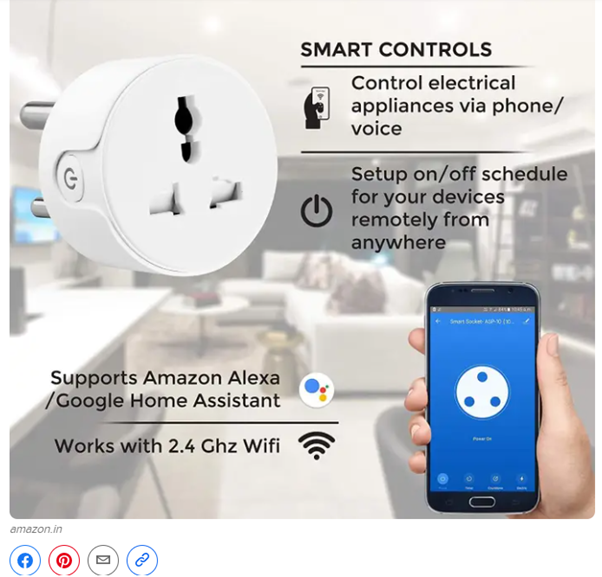

Want to take your content promotion strategy to the next level?
Then you need to incorporate some of the expert tips and tricks that I have explained in this post. These are some of the strategies that I have used and that have worked for me.
So, rest assured that each of these strategies is tried, tested, and approved by me, and will be extremely useful for your content promotion strategy.
Ready to find out what these strategies are?
Let’s get started.
1. Use Email Marketing for Content Promotion
Email marketing should be at the core of every content promotion strategy as it is one of the most effective ways to promote your content.
Your subscribers mostly are people who are already interested in your content or who have interacted with your content in the past. So, they are the prime targets for your content promotion as they are your regular audience.
Every time you create a new piece of content for your blog, simply send an update in your newsletter.
What should be the frequency of these newsletters?
Your newsletter frequency should be based on your content posting frequency as you want to curate a list of a few content pieces for every newsletter. For instance, if you post content daily, you can send a weekly newsletter.
Also, add visuals to drive more engagement and make the most of email marketing. But if you need help with creating your email marketing visual, you can use a graphic design service or start a 99designs contest. This way, you can have the best designers work on your email marketing graphics.
2. Make it Easy to Share Your Content
One thing that marketers often forget is:
You don’t always have to promote your content yourself.
Yes, you heard that. Not every content promotion strategy is about promoting the content yourself. One of the best content promotion strategies actually involves letting your audience promote your content.
That is where social sharing comes into play. Give your readers easy ways to share your content with their friends.
You can do that simply by adding social sharing buttons for all major social media and messaging platforms. Incorporate this in your website design right when you first start your own blog.
Pro Tip: Add shareable quotes and the “click to tweet” option in your content to further encourage social sharing.
3. Optimize Your Visuals for Sharing
Adding to the point above, you can also allow your readers to share individual videos and images from your content. This is a great way to optimize your content promotion strategy as it will get you more social shares.
Need an example?
Here you go.

BuzzFeed adds shareable visuals to almost all of their posts and they get tons of shares as well. Use the same tactic to improve your content promotion strategy.
You can also add your logo or watermark to these images to market your brand, apart from promoting your content.
It’s worth noting here that no matter how enticing your visuals are, they won’t go viral unless they are optimized for digital media. Therefore, it’s recommended that you leverage a designer with a degree in digital marketing to create powerful, optimized content that your audience will love to share.
4. Cross-Promote Content Across All Social Media Channels
Social media is the best place for content promotion as people are most active and engaged on their preferred social media platforms.
Share excerpts of your blog posts, share a quote or an image, and more. Tailor your content promotion strategy according to the platform you choose and share your content on all platforms that you’re active on.
One of the best tactics for social media content promotion is to share your content multiple times. This way, if people missed it the first time, they might engage with it when you share it again. Use a social scheduling tool to automatically post on multiple platforms at designated dates and times.

What else?
If you leverage chatbots to engage with the community, train them to promote your best content during user interactions. By weaving the content into conversations strategically, bots can drive traffic to it with ease.
For example, a restaurant business that harnesses a Messenger bot to take orders can promote deals and discounts directly on Facebook to a set of highly engaged audiences. That’s exactly why Dom’s – the Domino bot has proved to be a valuable content promotion channel for the brand.
The best part about this tactic is that it demands no additional investment, over and above your chatbot development costs. All you need to do is train your bots to route users to your best-performing content as much as possible.
5. Mention Influential People While Promoting Your Content
This is a sneaky way to optimize your content promotion strategy by leveraging influencers.
Whenever you create a content that involves an influencer or an industry expert in any way, use their name to promote your content.
For example, let’s say you interviewed an influencer or asked them for a quote. You can share that quote or an excerpt from the interview on social media and mention the influencer.
This will help you attract more people—who follow that influencer or find their content useful—to your content.
6. Use Topic Clusters and Internal Linking
This is one way to optimize your content promotion strategy where the content itself does the promotion for you.
The trick is to simply add internal links to other related content in your posts and direct your readers to other content on your site.
One great way to ensure that you have enough related content is to use topic clusters. This basically means choosing a broad topic and then covering several sub-topics via different pieces of content.
Which Content Promotion Strategy Will You Try First?
Use one or more of these tactics to optimize your content promotion strategy for 2021 and get more traffic to your website.
Start with the strategies that you find most relevant and easy to implement. Then, you can move on to the more complex ones.
Ready to create a winning content promotion strategy for your business? All the best!
About the Author
Gaurav Sharma is the founder and CEO of Attrock, a results-driven digital marketing company. Grew an agency from 5-figure to 7-figure revenue in just two years | 10X leads | 2.8X conversions | 300K organic monthly traffic. He also contributes to top publications like HuffPost, Adweek, Business 2 Community, TechCrunch, and more.
Leave a Reply